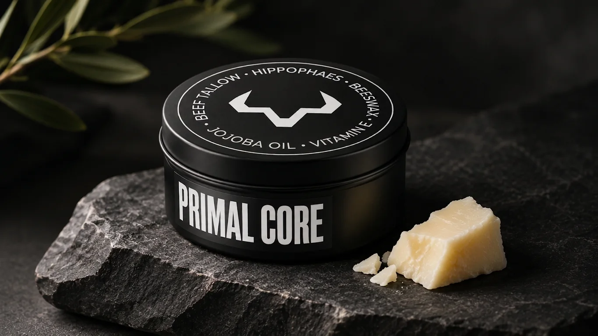

Η περιποίηση
ξεκινά από τα απλά.
Η ιστορία του PRIMAL CORE.
Πώς ξεκίνησε
Όλα ξεκίνησαν από μια περιέργεια: πώς έφτιαχναν καλλυντικά παλαιότερα; Ψάχνοντας, συναντούσαμε ξανά και ξανά το tallow — το καθαρισμένο λίπος βοοειδών.
Αυτή η πρώτη ύλη έγινε η αφετηρία για το PRIMAL CORE: ένα ανδρικό face balm που συνδυάζει παραδοσιακά συστατικά με μια σύγχρονη προσέγγιση στη σύνθεση.

Τι αναπτύσσουμε
Ένα άνυδρο face balm με βάση το βόειο στέαρ. Στόχος μας είναι η μαλακτική φροντίδα, η ευχάριστη υφή και μια απλή καθημερινή εφαρμογή.
Το προϊόν βρίσκεται υπό ανάπτυξη. Η σύνθεση, η καταλληλότητα και οι ισχυρισμοί του θα οριστικοποιηθούν μετά τους απαραίτητους ελέγχους. Δεν διατίθεται ακόμη προς πώληση.
MMTX E.E · Φιλικής Εταιρείας 12 · hello@primalcore.gr
Τι πιστεύουμε
- Κάθε συστατικό πρέπει να έχει συγκεκριμένο λειτουργικό ρόλο.
- Η καθημερινή περιποίηση μπορεί να είναι απλή.
- Οι υποσχέσεις ενός προϊόντος πρέπει να στηρίζονται σε τεκμηρίωση.